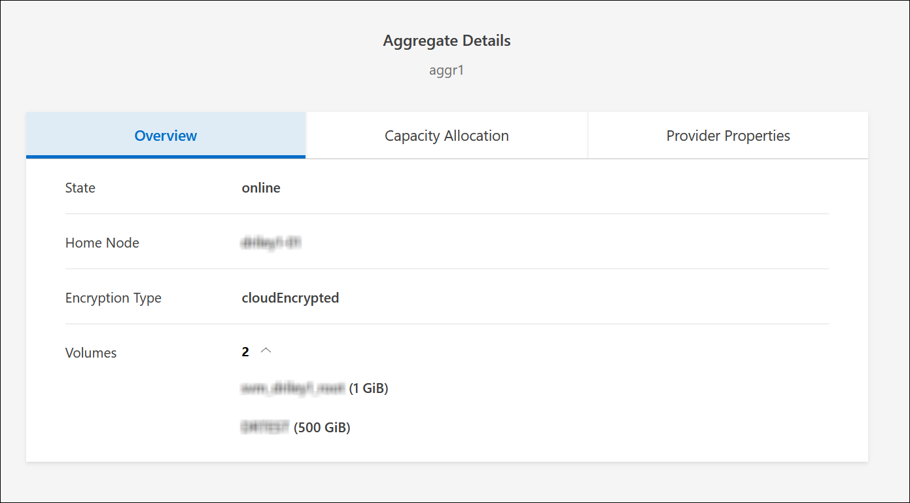

Versionshinweise
Versionshinweise
Management vorhandener Volumes
 Änderungen vorschlagen
Änderungen vorschlagen
Mit BlueXP können Sie Volumes und CIFS-Server verwalten. Außerdem werden Sie aufgefordert, Volumes zu verschieben, um Kapazitätsprobleme zu vermeiden.
Volumes managen
Sie können Volumes an neue Storage-Anforderungen anpassen. Sie können Volumes anzeigen, bearbeiten, klonen, wiederherstellen und löschen.
-
Wählen Sie im linken Navigationsmenü die Option Speicherung > Leinwand.
-
Doppelklicken Sie auf der Leinwand-Seite auf die Cloud Volumes ONTAP-Arbeitsumgebung, auf der Sie Volumes verwalten möchten.
-
Klicken Sie in der Arbeitsumgebung auf die Registerkarte Volumes.

-
Navigieren Sie auf der Registerkarte Volumes zum gewünschten Volume-Titel, und klicken Sie dann auf Volume verwalten, um auf das rechte Bedienfeld Volumes verwalten zuzugreifen.
Aufgabe Aktion Anzeigen von Informationen zu einem Volume
Klicken Sie unter Volume Actions im Bereich Manage Volumes auf View Volume Details.
Rufen Sie den NFS-Mount-Befehl ab
-
Klicken Sie unter Volume Actions im Fenster Manage Volumes auf Mount Command.
-
Klicken Sie Auf Kopieren.
Klonen Sie ein Volume
-
Klicken Sie unter Volume Actions im Bereich Manage Volumes auf Clone the Volume.
-
Ändern Sie den Klonnamen nach Bedarf, und klicken Sie dann auf Clone.
Bei diesem Prozess wird ein FlexClone Volume erstellt. Ein FlexClone Volume ist eine beschreibbare Point-in-Time-Kopie, die platzsparend ist, da es einen geringen Speicherplatz für Metadaten verbraucht und dann nur noch zusätzlichen Speicherplatz verbraucht, wenn Daten geändert oder hinzugefügt werden.
Weitere Informationen zu FlexClone Volumes finden Sie im "ONTAP 9 Leitfaden für das Management von logischem Storage".
Bearbeiten von Volume-Tags (nur Datenträger mit Lese-/Schreibzugriff)
-
Klicken Sie unter Volume Actions im Bereich Manage Volumes auf Edit Volume Tags, um das Volume-Tag zu ändern, das dem ausgewählten Volume zugewiesen ist.
-
Geben Sie den Schlüssel und den Wert für das Volume-Tag in die entsprechenden Felder ein.
-
Um weitere Tags hinzuzufügen, klicken Sie auf Neues Tag hinzufügen.
-
Klicken Sie Auf Speichern.
Bearbeiten eines Volumes (nur Volumes mit Lese-/Schreibzugriff)
-
Klicken Sie unter Volume Actions im Bereich Manage Volumes auf Edit Volume settings
-
Ändern Sie die Snapshot-Richtlinie des Volumes, die NFS-Protokollversion, die NFS-Zugriffssteuerungsliste (Exportrichtlinie) oder die Freigabeberechtigungen, und klicken Sie dann auf Apply.

Wenn Sie benutzerdefinierte Snapshot-Richtlinien benötigen, können Sie diese mit System Manager erstellen. Löschen Sie ein Volume
-
Klicken Sie unter Volume Actions im Bereich Manage Volumes auf Delete the Volume.
-
Geben Sie im Fenster Volume löschen den Namen des Volumes ein, das Sie löschen möchten.
-
Klicken Sie zur Bestätigung erneut auf Löschen.
Erstellen Sie bei Bedarf eine Snapshot Kopie
-
Klicken Sie im Bereich Volumes verwalten unter Schutzaktionen auf Snapshot-Kopie erstellen.
-
Ändern Sie ggf. den Namen und klicken Sie dann auf Erstellen.
Wiederherstellen von Daten aus einer Snapshot Kopie auf einem neuen Volume
-
Klicken Sie im Bereich Volumes verwalten unter Schutzaktionen auf aus Snapshot-Kopie wiederherstellen.
-
Wählen Sie eine Snapshot Kopie aus, geben Sie einen Namen für das neue Volume ein und klicken Sie dann auf Wiederherstellen.
Ändern Sie den zugrunde liegenden Festplattentyp
-
Klicken Sie unter Erweiterte Aktionen im Bereich Volumes verwalten auf Datenträgertyp ändern.
-
Wählen Sie den Laufwerkstyp aus und klicken Sie dann auf Ändern.
BlueXP verschiebt das Volume in ein vorhandenes Aggregat, das den ausgewählten Festplattentyp nutzt oder ein neues Aggregat für das Volume erstellt. Ändern Sie die Tiering Policy
-
Klicken Sie unter Erweiterte Aktionen im Bereich Volumes verwalten auf Tiering-Richtlinie ändern.
-
Wählen Sie eine andere Richtlinie aus und klicken Sie auf Ändern.
BlueXP verschiebt das Volume in ein vorhandenes Aggregat, das den ausgewählten Festplattentyp mit Tiering nutzt, oder erstellt ein neues Aggregat für das Volume. Löschen Sie ein Volume
-
Wählen Sie ein Volume aus, und klicken Sie dann auf Löschen.
-
Geben Sie den Namen des Volumes in das Dialogfeld ein.
-
Klicken Sie zur Bestätigung erneut auf Löschen.
-
Die Größe eines Volumes ändern
Standardmäßig wird ein Volume automatisch auf eine Maximalgröße erweitert, wenn es sich um keinen Speicherplatz handelt. Der Standardwert ist 1,000. Mit dieser Einstellung kann das Volume auf das 11-fache seiner Größe erweitert werden. Dieser Wert kann in den Einstellungen eines Connectors konfiguriert werden.
Wenn Sie die Größe Ihres Volumens ändern müssen, können Sie es durch "ONTAP System Manager". Berücksichtigen Sie unbedingt die Kapazitätsgrenzen Ihres Systems, wenn Sie die Größe der Volumes ändern. Wechseln Sie zum "Versionshinweise zu Cloud Volumes ONTAP" Entnehmen.
Ändern Sie den CIFS-Server
Wenn Sie Ihre DNS-Server oder Active Directory-Domain ändern, müssen Sie den CIFS-Server in Cloud Volumes ONTAP ändern, damit er weiterhin Storage für Clients bereitstellen kann.
-
Klicken Sie in der Arbeitsumgebung auf der Registerkarte Übersicht auf die Registerkarte Funktion im rechten Fensterbereich.
-
Klicken Sie im Feld CIFS-Setup auf das Symbol Bleistift, um das CIFS-Setup-Fenster anzuzeigen.
-
Geben Sie die Einstellungen für den CIFS-Server an:
Aufgabe Aktion Storage VM (SVM) auswählen
Durch Auswahl der SVM (Storage Virtual Machine) des Cloud Volume ONTAP werden die konfigurierten CIFS-Informationen angezeigt.
Active Directory-Domäne, der Sie beitreten möchten
Der FQDN der Active Directory (AD)-Domain, der der CIFS-Server beitreten soll.
Anmeldeinformationen, die zur Aufnahme in die Domäne autorisiert sind
Der Name und das Kennwort eines Windows-Kontos mit ausreichenden Berechtigungen zum Hinzufügen von Computern zur angegebenen Organisationseinheit (OU) innerhalb der AD-Domäne.
Primäre und sekundäre DNS-IP-Adresse
Die IP-Adressen der DNS-Server, die die Namensauflösung für den CIFS-Server bereitstellen.
Die aufgeführten DNS-Server müssen die Servicestandortdatensätze (SRV) enthalten, die zum Auffinden der Active Directory LDAP-Server und Domänencontroller für die Domain, der der CIFS-Server beitreten wird, erforderlich sind.
Ifdef::gcp[]
Wenn Sie Google Managed Active Directory konfigurieren, kann standardmäßig mit der IP-Adresse 169.254.169.254 auf AD zugegriffen werden.
Endif::gcp[]DNS-Domäne
Die DNS-Domain für die Cloud Volumes ONTAP Storage Virtual Machine (SVM). In den meisten Fällen entspricht die Domäne der AD-Domäne.
CIFS-Server-BIOS-Name
Ein CIFS-Servername, der in der AD-Domain eindeutig ist.
Organisationseinheit
Die Organisationseinheit innerhalb der AD-Domain, die dem CIFS-Server zugeordnet werden soll. Der Standardwert lautet CN=Computers.
-
Um von AWS verwaltete Microsoft AD als AD-Server für Cloud Volumes ONTAP zu konfigurieren, geben Sie in diesem Feld OU=Computers,OU=corp ein.
-
-
Klicken Sie Auf Set.
Cloud Volumes ONTAP aktualisiert den CIFS-Server mit den Änderungen.
Verschieben Sie ein Volume
Verschieben Sie Volumes, um die Kapazitätsauslastung, die Performance zu verbessern und Service Level Agreements zu erfüllen.
Sie können ein Volume in System Manager verschieben, indem Sie ein Volume und das Zielaggregat auswählen, den Vorgang zur Volume-Verschiebung starten und optional den Auftrag zur Volume-Verschiebung überwachen. Bei Nutzung von System Manager wird die Verschiebung eines Volumes automatisch abgeschlossen.
-
Verwenden Sie System Manager oder die CLI, um die Volumes in das Aggregat zu verschieben.
In den meisten Fällen können Sie mit System Manager Volumes verschieben.
Anweisungen hierzu finden Sie im "ONTAP 9 Volume Move Express Guide".
Verschieben eines Volumes, wenn BlueXP eine Meldung Aktion erforderlich anzeigt
In BlueXP wird möglicherweise eine Meldung „Aktion erforderlich“ angezeigt, die besagt, dass das Verschieben eines Volumes erforderlich ist, um Kapazitätsprobleme zu vermeiden, aber Sie müssen das Problem selbst beheben. In diesem Fall müssen Sie herausfinden, wie das Problem behoben werden kann, und dann ein oder mehrere Volumes verschieben.

|
BlueXP zeigt diese „Aktion erforderlich“-Meldungen an, wenn ein Aggregat 90 % der verwendeten Kapazität erreicht hat. Wenn Daten-Tiering aktiviert ist, werden die Meldungen angezeigt, wenn ein Aggregat eine zu 80 % genutzte Kapazität erreicht hat. Standardmäßig werden 10 % freier Speicherplatz für das Daten-Tiering reserviert. "Erfahren Sie mehr über das freie Speicherplatzverhältnis für Daten-Tiering". |
-
Verschieben Sie Volumes basierend auf Ihrer Analyse, um Kapazitätsprobleme zu vermeiden:
Erkennen der Behebung von Kapazitätsproblemen
Wenn BlueXP keine Empfehlungen zum Verschieben eines Volumes zur Vermeidung von Kapazitätsproblemen bereitstellen kann, müssen Sie die Volumes identifizieren, die verschoben werden müssen und ob Sie sie zu einem anderen Aggregat auf demselben System oder einem anderen System verschieben möchten.
-
Zeigen Sie die erweiterten Informationen in der Meldung Aktion erforderlich an, um das Aggregat zu identifizieren, das seine Kapazitätsgrenze erreicht hat.
Die erweiterten Informationen sollten beispielsweise Folgendes enthalten: Aggregat aggr1 hat seine Kapazitätsgrenze erreicht.
-
Identifizieren Sie ein oder mehrere Volumes, die aus dem Aggregat verschoben werden sollen:
-
Klicken Sie in der Arbeitsumgebung auf die Registerkarte Aggregate.
-
Navigieren Sie zur gewünschten Aggregat-Kachel, und klicken Sie dann auf … (Ellipsensymbol) > Aggregatdetails anzeigen.
-
Überprüfen Sie auf der Registerkarte „Übersicht“ des Bildschirms „Aggregatdetails“ die Größe jedes Volumes, und wählen Sie ein oder mehrere Volumes aus dem Aggregat aus.
Sie sollten Volumes auswählen, die groß genug sind, um Speicherplatz im Aggregat freizugeben, damit Sie in Zukunft zusätzliche Kapazitätsprobleme vermeiden können.

-
-
Wenn das System die Festplattengrenze nicht erreicht hat, sollten Sie die Volumes in ein vorhandenes Aggregat oder ein neues Aggregat auf demselben System verschieben.
Weitere Informationen finden Sie unter Verschieben Sie Volumes in ein anderes Aggregat, um Kapazitätsprobleme zu vermeiden.
-
Wenn das System die Festplattengrenze erreicht hat, führen Sie einen der folgenden Schritte aus:
-
Löschen Sie nicht verwendete Volumes.
-
Ordnen Sie Volumes neu an, um Speicherplatz auf einem Aggregat freizugeben.
Weitere Informationen finden Sie unter Verschieben Sie Volumes in ein anderes Aggregat, um Kapazitätsprobleme zu vermeiden.
-
Verschieben Sie zwei oder mehr Volumes auf ein anderes System mit Speicherplatz.
Weitere Informationen finden Sie unter Verschieben Sie Volumes in ein anderes Aggregat, um Kapazitätsprobleme zu vermeiden.
-
Verschieben Sie Volumes in ein anderes System, um Kapazitätsprobleme zu vermeiden
Sie können ein oder mehrere Volumes in ein anderes Cloud Volumes ONTAP System verschieben, um Kapazitätsprobleme zu vermeiden. Dies kann erforderlich sein, wenn das System die Festplattengrenze erreicht hat.
Sie können die folgenden Schritte in dieser Aufgabe ausführen, um die folgende Meldung "Aktion erforderlich" zu korrigieren:
Das Verschieben eines Volumes ist notwendig, um Kapazitätsprobleme zu vermeiden. BlueXP kann diese Aktion jedoch nicht für Sie ausführen, da das System die Festplattengrenze erreicht hat.
-
Identifizieren Sie ein Cloud Volumes ONTAP System mit verfügbarer Kapazität, oder implementieren Sie ein neues System.
-
Ziehen Sie die Quellarbeitsumgebung per Drag & Drop in die Zielarbeitsumgebung, um eine einmalige Datenreplizierung des Volumes durchzuführen.
Weitere Informationen finden Sie unter "Replizierung von Daten zwischen Systemen".
-
Wechseln Sie zur Seite "Replication Status", und brechen Sie die SnapMirror Beziehung ab, um das replizierte Volume von einem Datensicherungsvolume in ein Lese-/Schreibvolume zu konvertieren.
Weitere Informationen finden Sie unter "Managen von Plänen und Beziehungen zur Datenreplizierung".
-
Konfigurieren Sie das Volume für den Datenzugriff.
Informationen über die Konfiguration eines Ziel-Volume für den Datenzugriff finden Sie unter "ONTAP 9 Express Guide für die Disaster Recovery von Volumes".
-
Löschen Sie das ursprüngliche Volume.
Weitere Informationen finden Sie unter "Volumes managen".
Verschieben Sie Volumes in ein anderes Aggregat, um Kapazitätsprobleme zu vermeiden
Sie können ein oder mehrere Volumes in ein anderes Aggregat verschieben, um Kapazitätsprobleme zu vermeiden.
Sie können die folgenden Schritte in dieser Aufgabe ausführen, um die folgende Meldung "Aktion erforderlich" zu korrigieren:
Das Verschieben von zwei oder mehr Volumes ist notwendig, um Kapazitätsprobleme zu vermeiden, BlueXP kann diese Aktion jedoch nicht für Sie durchführen.
-
Überprüfen Sie, ob ein vorhandenes Aggregat über die verfügbare Kapazität für die Volumes verfügt, die Sie verschieben müssen:
-
Klicken Sie in der Arbeitsumgebung auf die Registerkarte Aggregate.
-
Navigieren Sie zur gewünschten Aggregat-Kachel, und klicken Sie dann auf … (Ellipsensymbol) > Aggregatdetails anzeigen.
-
Zeigen Sie unter der Kachel „Aggregat“ die verfügbare Kapazität an (bereitgestellte Größe minus genutzte Aggregatkapazität).

-
-
Fügen Sie bei Bedarf Festplatten zu einem vorhandenen Aggregat hinzu:
-
Wählen Sie das Aggregat aus und klicken Sie dann auf … (Ellipsensymbol) > Datenträger hinzufügen.
-
Wählen Sie die Anzahl der hinzuzufügenden Festplatten aus, und klicken Sie dann auf Hinzufügen.
-
-
Wenn keine Aggregate über verfügbare Kapazität verfügen, erstellen Sie ein neues Aggregat.
Weitere Informationen finden Sie unter "Aggregate werden erstellt".
-
Verwenden Sie System Manager oder die CLI, um die Volumes in das Aggregat zu verschieben.
-
In den meisten Fällen können Sie mit System Manager Volumes verschieben.
Anweisungen hierzu finden Sie im "ONTAP 9 Volume Move Express Guide".
Gründe, warum eine Volume-Verschiebung langsam durchführen könnte
Das Verschieben eines Volumes dauert möglicherweise länger, als erwartet wird, wenn eine der folgenden Bedingungen für Cloud Volumes ONTAP zutrifft:
-
Das Volume ist ein Klon.
-
Das Volume ist ein übergeordnetes Objekt eines Klons.
-
Das Quell- oder Zielaggregat verfügt über eine einzige durchsatzoptimierte Festplatte (st1).
-
Eines der Aggregate verwendet ein älteres Benennungsschema für Objekte. Beide Aggregate müssen das gleiche Namenformat verwenden.
Ein älteres Benennungsschema wird verwendet, wenn das Daten-Tiering auf einem Aggregat in Version 9.4 oder früher aktiviert wurde.
-
Die Verschlüsselungseinstellungen stimmen nicht mit den Quell- und Zielaggregaten überein. Zudem wird ein Rekey ausgeführt.
-
Die Option -Tiering-Richtlinie wurde bei der Verschiebung des Volumes angegeben, um die Tiering-Richtlinie zu ändern.
-
Die Option -Generate-Destination-key wurde für die Verschiebung des Volumes angegeben.
Zeigen Sie FlexGroup Volumes an
FlexGroup Volumes, die über CLI oder System Manager erstellt wurden, können direkt über die Registerkarte Volumes in BlueXP angezeigt werden. Wie bei FlexVol Volumes angegeben, bietet BlueXP über eine dedizierte Volume-Kachel detaillierte Informationen zu den erstellten FleGroup Volumes. Unter der Kachel „Volumes“ können Sie jede FlexGroup Volume-Gruppe über den Mauszeiger über das Symbol halten. Darüber hinaus können Sie FlexGroup-Volumes in der Listenansicht Volumes in der Spalte Volume-Stil identifizieren und sortieren.

|
|
Derzeit können Sie vorhandene FlexGroup Volumes nur unter BlueXP anzeigen. Die Möglichkeit zum Erstellen von FlexGroup Volumes in BlueXP ist nicht verfügbar, aber für eine zukünftige Version geplant. |